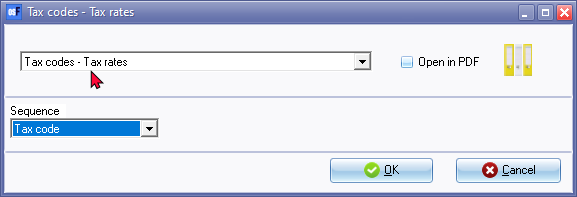
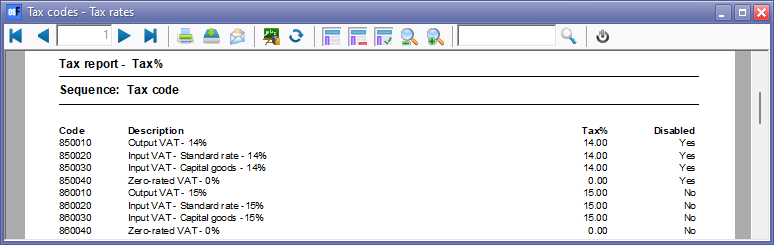
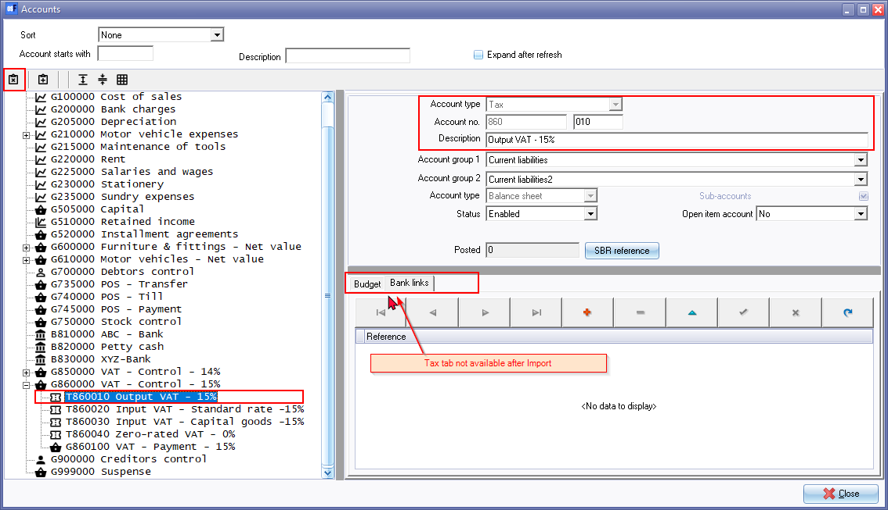
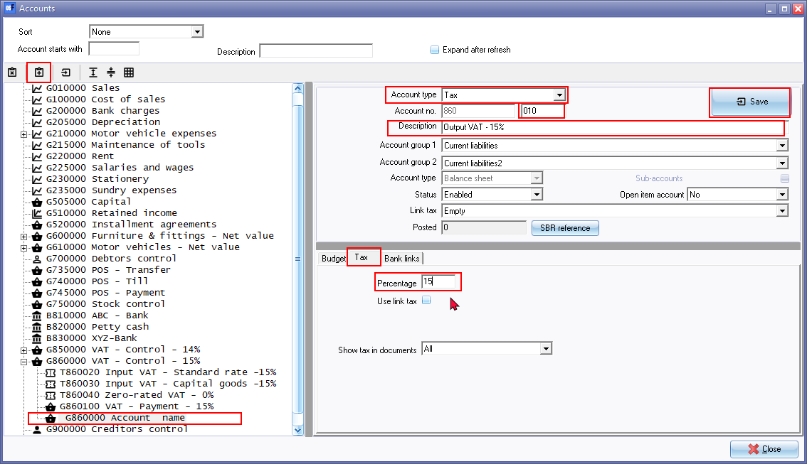

Tax (Tax codes - Tax rates)
The Tax report is added to the User reports menu to check the Tax percentages and Tax code status (Active (Enabled) or Inactive (Disabled)).
You may print this report to check your tax rates or tax percentages for Tax (VAT/GST/Sales tax) codes :
- Download a Firebird database type Set of Books (template) on the Downloads screen in the - "Let osFinancials help you to create a Set of Books?" option on the Creation wizard. - You may need to change the descriptions, tax rates, etc. in Setup → Accounts.
- Create a new blank database for Firebird or Microsoft SQL Server database types using the “Create a Set of Books (Advanced)?" option on the Creation wizard. Should you import the Accounts (e.g. from an exported Tab Delimited text file exported from another Set of Books), this report may reveal some issues, for example Zero-rated tax (VAT/GST/Sales tax) may be displayed as a blank tax percentage, etc.
Tax codes - Tax rates report options
To print Tax list report:
- On the Reports ribbon, select User reports → Tax.

- Select the sequence (order) to list the "Tax codes" by Tax code (account code) or "Description".
- Click OK.
Printed : Tax codes - Tax rates report
An example of the "Tax codes - Tax rates" report, is as follows:

Should you need to change tax rates and/or Tax accounts/Tax codes go to Setup → Accounts.
After Accounts import
Disabled (Inactive) Accounts
If the status of Accounts were set as Disabled in the source Set of Books from which the Export file was exported, the Disabled accounts will be imported as "Enabled". You may need to:
- Delete the "Disabled" accounts, if you do not wish to keep these accounts; or
- Keep the Status of these Accounts as "Enabled" (active); or set the Status of these Accounts as "Disabled" (inactive).
Tax (VAT/GST/Sales tax) Accounts / Codes
It is important to check the Tax (VAT/GST/Sales tax accounts and Tax percentages, before you process any transactions in batches and/or documents.
Zero -rated Tax (VAT/GST/Sales tax) accounts - Confirm Zero percentage
Zero- rated Tax (VAT/GST/Sales tax) with a Tax percentage of "0%" may be blank.
On the Tax codes - Tax rates report (User reports → Tax on the Reports ribbon), Tax percentages with a zero-rate will be Imported as a blank percentage.
This may cause the Zero rated Tax (VAT/GST/Sales tax) selected in processing transactions in Batches and/or Documents not to display correctly on Tax reports.

To fix this; select the Zero-rated Tax (VAT/GST/Sales tax) account.
Overtype the Tax percentage with "0"

After confirming Zero-rated "0" tax percentages (tax rates) the Tax rates should be correctly listed as "0" percentage.

Recreate Tax (VAT/GST/Sales tax codes with missing Tax tab
The Tax tab on the first Tax code (e.g. Output VAT - 14% (T850010) and Output VAT - 15% (T850010) is missing after Import.

Select the Tax code (e.g. T860010) and Copy the Description (e.g. Output VAT - 15%) to your clipboard.
Click on the Delete  icon.
icon.
Select the Tax control account (e.g. VAT - Control - Output VAT - 15%) (main account).
Click on the Add  icon.
icon.

A new Ledger account will be added. Select the following:
- Account type - Select Tax.
- Account number - Change the "000" in the Sub-account section with "010". You may use the same sub account code as the deleted Tax account.
- Description - Enter the name of your Output tax account (or paste from your clipboard).
- On the Tax tab, enter the Tax percentage (e.g. 15) and click on the Save button.